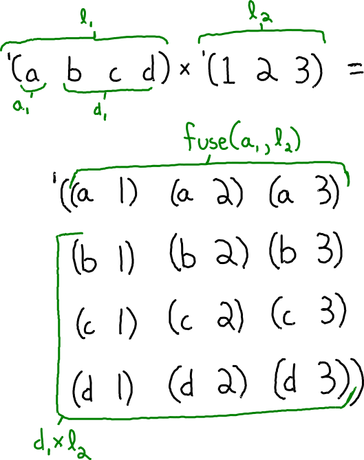

The Cartesian Product in miniKanren
I have become interested in modeling the Cartesian product as a relation in miniKanren. The Cartesian product is typically defined in terms of sets, but I will use lists since they are easier to work with in miniKanren. So the Cartesian product is a relation between three lists: l₁, l₂, and l₁×l₂.
(defrel (cross-producto l₁ l₂ l₁×l₂) ...)
The base case is straightforward. When l₁ is empty, then the product is empty. It is like multiplying by zero.
(defrel (cross-producto l₁ l₂ l₁×l₂) (conde ((== l₁ '()) (== l₁×l₂ '())) ...))
The recursive case is more interesting. I always like to start by drawing a picture and annotating things that should be named in green. This helps me figure out the relationships.

From this picture I can see that l₁ is nonempty, meaning it has a head a₁ and a tail d₁. That gives an opportunity for recurring on d₁×l₂. Finally, to get the entirety of l₁×l₂ I need to somehow "fuse" a₁ onto each element of l₂ and append it to d₁×l₂.
(defrel (cross-producto l₁ l₂ l₁×l₂) (conde ((== l₁ '()) (== l₁×l₂ '())) ((fresh (a₁ d₁ d₁×l₂ fusion) (== l₁ `(,a₁ . ,d₁)) (fuseo a₁ l₂ fusion) (appendo fusion d₁×l₂ l₁×l₂) (cross-producto d₁ l₂ d₁×l₂))))) (defrel (fuseo sym l o) (conde ((== l '()) (== o '())) ((fresh (a d rec) (== l `(,a . ,d)) (== o `((,sym ,a) . ,rec)) (fuseo sym d rec))))) (defrel (appendo l r o) (conde ((== l '()) (== r o)) ((fresh (a d rec) (== l `(,a . ,d)) (== o `(,a . ,rec)) (appendo d r rec)))))
Let’s see if cross-producto can be run forwards:
This output has been hand-formatted for easier reading.
> (run* (l₁×l₂) (cross-producto '(a b c d) '(1 2 3) l₁×l₂)) '((((a 1) (a 2) (a 3) (b 1) (b 2) (b 3) (c 1) (c 2) (c 3) (d 1) (d 2) (d 3))))
> (run 1 (l₁ l₂) (cross-producto l₁ l₂ '((a 1) (a 2) (a 3) (b 1) (b 2) (b 3) (c 1) (c 2) (c 3) (d 1) (d 2) (d 3)))) '(((a b c d) (1 2 3)))
This example only works for definition of the Cartesian product over lists, not sets.
> (run 2 (l₁ l₂) (cross-producto l₁ l₂ '((a 1) (a 2) (a 1) (a 2)))) '(((a a) (1 2)) ((a) (1 2 1 2)))
For all my queries so far, I know that an answer exists and I’m asking miniKanren to find it. Let’s see if it can handle queries where there is no correct answer:
> (run 1 (q) (cross-producto '(a b c) '(1 2 3) '())) '()
It correctly identified that that the cross product of '(a b c) and '(d e f) cannot be the empty list. Here is a trickier test: is '((a 1) (b 2)) the cross product of two lists? Never. Let’s see if miniKanren can figure that out.
> (run 1 (l₁ l₂) (cross-producto l₁ l₂ '((a 1) (b 2)))) ...
The query diverges! It should produce '() like before, but it loops forever instead. Let’s analyze why.
This query provides a ground version of l₁×l₂, but it leaves l₁ and l₂ fresh. Since we know that l₁×l₂ is nonempty, the first conde clause fails, and so l₁ must be nonempty too. But l₂ could still be empty, in which case fusion is empty, and so appendo immediately halts with d₁×l₂ being unified to l₁×l₂. Then it recurs on d₁, which is fresh since l₁ was fresh, '(), and d₁×l₂, which is really just l₁×l₂. It is a recursive call where nothing has changed, except that l₂ is ground as the empty list (but that was picked on purpose), so it would continue to call itself infinitely.
1 First Refactor
One way to fix the divergence to separate l₂ into its empty and nonempty cases. This ends up being pretty straightforward: the output is empty when l₂ is empty and so does not require recursion. And now l₂ needs to be nonempty in the recursive clause.
(defrel (cross-producto l₁ l₂ l₁×l₂) (conde ((== l₁ '()) (== l₁×l₂ '())) ((== l₂ '()) (== l₁×l₂ '())) ((fresh (a₁ d₁ a₂ d₂ d₁×l₂ fusion) (== l₁ `(,a₁ . ,d₁)) (== l₂ `(,a₂ . ,d₂)) (fuseo a₁ l₂ fusion) (appendo fusion d₁×l₂ l₁×l₂) (cross-producto d₁ l₂ d₁×l₂)))))
> (run 1 (l₁ l₂) (cross-producto l₁ l₂ '((a 1) (b 2)))) ...
It still diverges! But I’m not surprised. cross-producto is a recursive relation which uses two other recursive relations: fuseo and appendo.
2 Second Refactor
Another refactor I can try is to both fuse and append at the same time, e.g.:
> (run 1 (q) (fuse-and-appendo 'x '(a b c) '((y d) (y e) (y f)) q)) '(((x a) (x b) (x c) (y d) (y e) (y f)))
That way, cross-producto would not need the intermediate variable fusion.
(defrel (cross-producto l₁ l₂ l₁×l₂) (conde ((== l₁ '()) (== l₁×l₂ '())) ((== l₂ '()) (== l₁×l₂ '())) ((fresh (a₁ d₁ a₂ d₂ d₁×l₂ fusion) (== l₁ `(,a₁ . ,d₁)) (== l₂ `(,a₂ . ,d₂)) (fuse-and-appendo a₁ l₂ d₁×l₂ l₁×l₂) (cross-producto d₁ l₂ d₁×l₂)))))
Here is the implementation of fuse-and-appendo:
(defrel (fuse-and-appendo sym l r o) (conde ((== l '()) (== r o)) ((fresh (a d rec) (== l `(,a . ,d)) (== o `((,sym ,a) . ,rec)) (fuse-and-appendo sym d r rec)))))
It’s not always possible to define conjunction of two recursive relations as a singly-recursive relation, so it’s great when it works. The basis for this correctness-preserving transformation is a logical rule of inference shown here:
\frac{((p \land a) \lor (\neg p \land b)) \land ((p \land x) \lor (\neg p \land y))}{(p \land a \land x) \lor (\neg p \land b \land y)}
I’ll get a better understanding of this divergence by using the first-order-miniKanren debugger defined in: http://minikanren.org/workshop/2019/minikanren19-final2.pdf.
> (run 1 (l₁ l₂) (cross-producto l₁ l₂ '((a 1) (b 2)))) '()
That did the trick! But notice that fuse-and-appendo allows l₂ to be empty, so both refactors are needed together to prevent divergence.